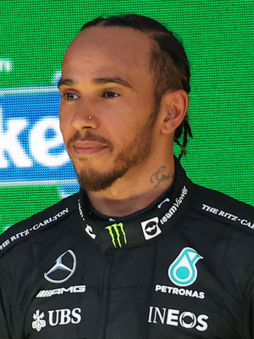
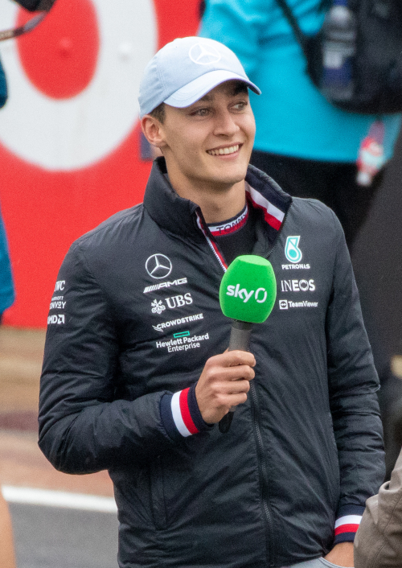

História
Em 16 de novembro de 2009, a montadora alemã Mercedes-Benz anunciou a venda da sua parte da equipe McLaren e a compra da Brawn GP, passando a se chamar Mercedes GP a partir de 2010. Apesar da venda das ações que detinha na McLaren, a Mercedes continuou comprometida para fornecer motores para a escuderia por mais seis anos.
Em 23 de novembro de 2009, a equipe anunciou a contratação do piloto alemão Nico Rosberg, para a disputa da temporada de 2010. Em 23 de dezembro de 2009, o heptacampeão Michael Schumacher foi oficialmente anunciado como piloto da construtora chefiada por Ross Brawn. Schumacher havia anunciado sua aposentadoria ao final da temporada de 2006. Seu retorno, ao lado do conterrâneo Nico Rosberg, foi visto com grandes expectativas pela comunidade automobilística.
Após duas temporadas de resultados medianos, a Mercedes conquistou a pole position e logo em seguida a vitória no Grande Prêmio da China de 2012, com Nico Rosberg, que foi as primeiras da equipe desde o Grande Prêmio da Itália de 1955 com Juan Manuel Fangio.
Pilotos
-
Lewis Hamilton
- Nacionalidade: Reino Unido
- Idade: 38 anos
- Corridas: 318
- Vitórias: 103
- Pódios: 194
- Campeão: 7 vezes
-
George Russell
- Nacionalidade: Reino Unido
- Idade: 25 anos
- Corridas: 90
- Vitórias: 1
- Pódios: 10
- Campeão: 0 vez
*Dados do dia 26/06/2023